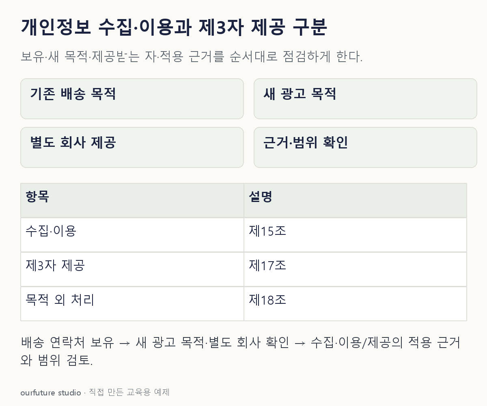

핵심 이론
개인정보 보호법은 수집·이용과 제3자 제공, 목적 외 이용·제공의 조건을 구분한다. 2026년 10월 30일 확인한 원문은 2026년 9월 11일 시행 법률 제21445호다. 과거 복원 문항의 설명을 현재 법 조문으로 그대로 옮기지 않는다.
제15조는 정해진 근거에 따른 수집과 그 목적 범위의 이용을 다룬다. 제17조는 제3자 제공을, 제18조는 목적 외 이용·제공의 제한과 예외를 다룬다. 동의만이 유일한 근거인 것은 아니지만, “이미 수집했다”는 말만으로 모든 추가 이용과 제공이 허용되는 것도 아니다.
자체 예제에서는 배송에 쓰던 연락처를 별도 회사의 광고에 제공하려 한다. 먼저 목적과 제공받는 자, 항목, 보유 기간, 적용 가능한 근거를 확인해야 한다. 예외의 적용에는 구체적 사실과 관련 하위 규정 확인이 필요하므로 이 문항은 실제 사업의 적법성을 확정하지 않는다.
작은 예제로 확인하기
서로 다른 처리 행위를 적는다.
| 행위 | 확인할 초점 |
|---|---|
| 주문 연락처 수집·배송 이용 | 수집·이용 근거와 목적 |
| 다른 회사에 광고용 전달 | 제3자 제공과 목적 외 처리의 조건 |
주문 처리에 필요한 자료를 보유하고 있다는 사실과 광고 회사에 제공할 수 있다는 결론 사이에는 별도의 검토가 필요하다. 예를 들어 “배송 알림 수신 동의”만 있는 경우, 이를 별도 광고 회사에 연락처를 제공하는 동의로 바꾸어 읽지 않는다. 제17조 제2항은 동의를 근거로 제공할 때 제공받는 자·목적·항목·보유 및 이용 기간·거부 권리 등을 알리도록 한다. 체크 표시의 존재보다 실제 알린 내용이 이번 처리와 맞는지를 확인하는 이유다.
그림으로 확인하기

직접 고르기
배송 목적으로 수집한 연락처를 별도 회사의 광고에 제공하려 한다.
가장 먼저 확인할 판단은?
- 1. 보유 중이면 무조건 가능
- 2. 이름만 지우면 모든 조건 면제
- 3. 새 목적과 제공에 적용할 법적 근거 확인
- 4. 암호화하면 목적 검토 불필요
정답과 오답의 이유 확인하기
정답 3번 — 새 목적과 제공에 적용할 법적 근거 확인
새 목적과 제3자 제공의 조건을 확인해야 하며, 기존 보유 사실만으로 허용을 확정할 수 없다.
- 1번은 수집과 새로운 제공의 조건을 혼동한다.
- 2번은 이름 삭제만으로 개인 식별 가능성과 처리 조건이 모두 없어졌다고 단정한다.
- 4번은 보호 조치가 목적과 근거 검토를 대체한다고 잘못 본다.
조건 하나 바꾸어 풀기
새 처리에 대한 별도 동의가 있다는 사실만 추가되면 검토가 모두 끝나는가?
풀이: 동의 내용과 범위 등 적용 조건을 확인해야 한다.
동의라는 단어의 존재와 해당 제공 목적·대상·항목에 대한 유효한 근거는 같지 않다.
다시 떠올릴 단서
누가·무슨 목적으로·무엇을 받는지, 그 근거를 확인한다.
근거와 적용 조건
- 국가법령정보센터: 개인정보 보호법 제15조 — 2026.9.11 시행, 법률 제21445호. 반환된 제1항 첫 문장과 제2호에서 수집·이용의 근거와 목적 범위 확인. 세부 각 호 전체를 반환한 자료는 아님. 확인일 2026-10-30.
- 국가법령정보센터: 개인정보 보호법 제17~19조 — 2026.9.11 시행. 제17조 제공, 제18조 목적 외 이용·제공 제한 및 예외. 확인일 2026-10-30.
상황·수치·보기·조건 변경은 자체 교육 예제다. 민간 복원 문항의 공식 정답이나 실제 성능·학습 효과를 뜻하지 않는다.
읽은 내용을 적용해 보기
2026-10-30 확인한 법률 조문의 학습용 점검이며 실제 사업의 적법성·허가·법률 자문을 자동 판정하지 않는다.